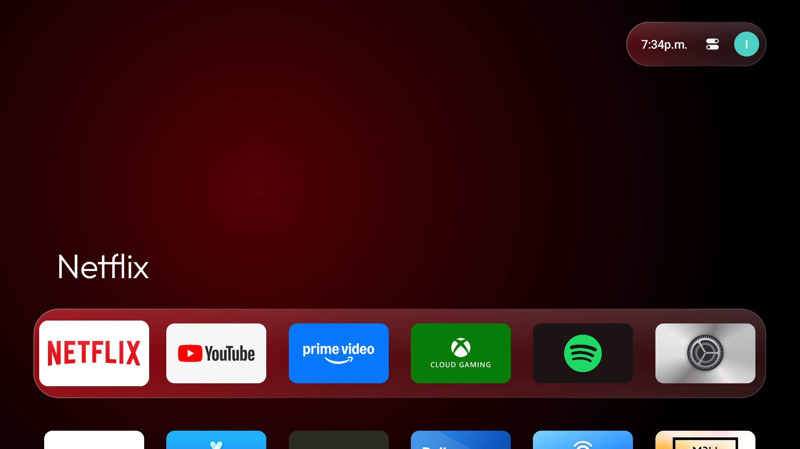
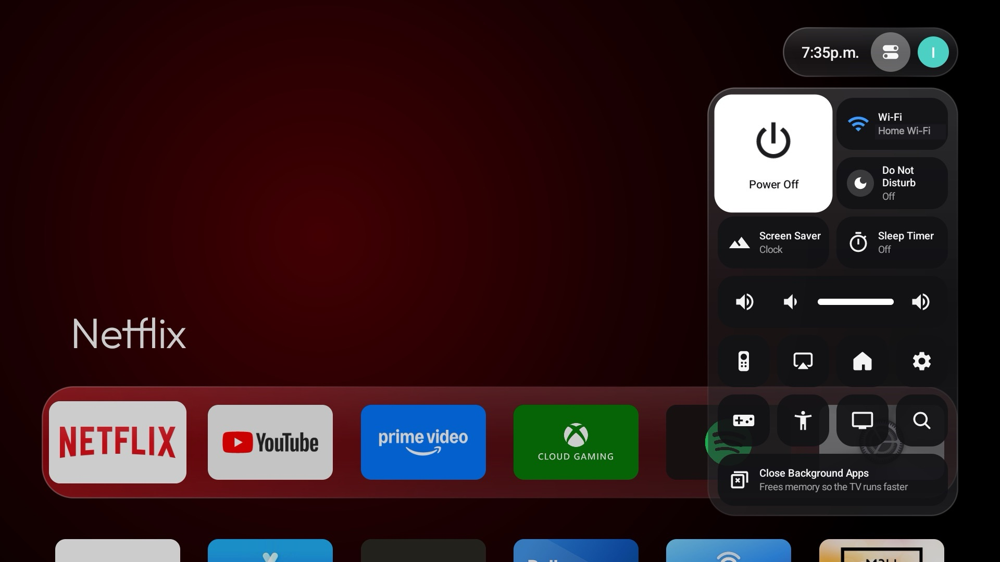
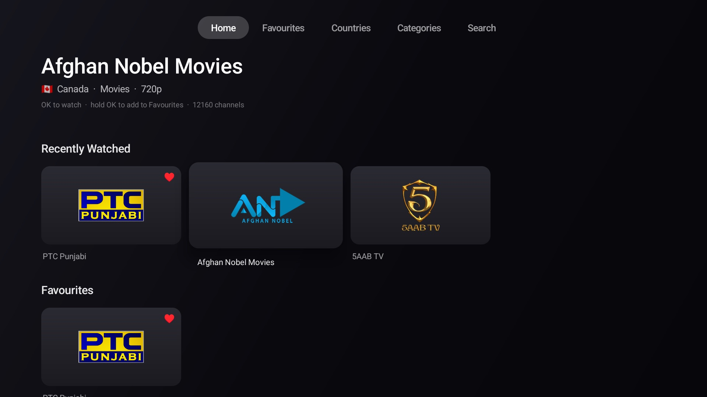
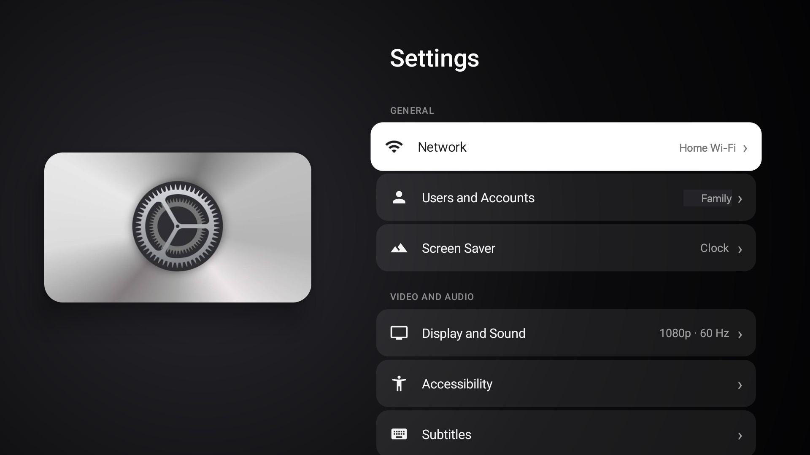
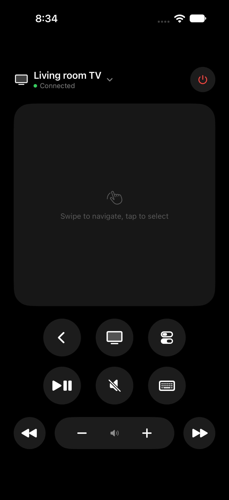
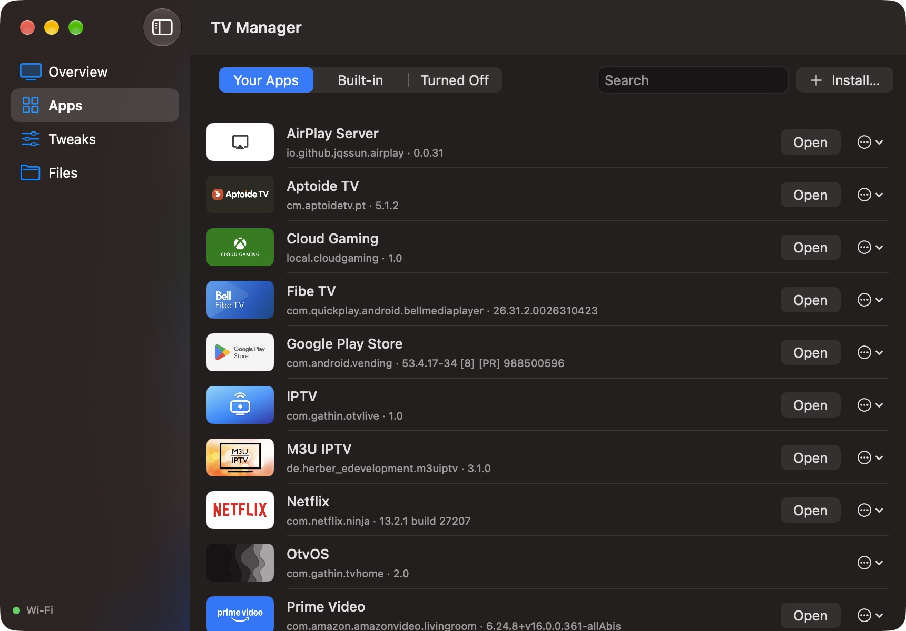
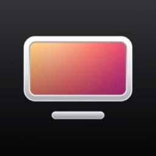
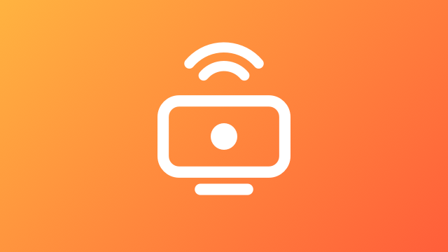
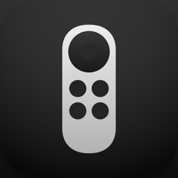
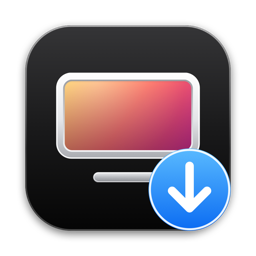

Your Android TV experience, reimagined. A fast, beautiful home screen, your iPhone as the remote, AirPlay, Apple Home and Siri, live TV from around the world, and a Mac or Windows PC that works hand in hand with your TV.
Free. For Android TV and Google TV, Android 8 and later.

OtvOS
OtvOS replaces your TV's home screen with one that's clean, quick and a joy to use, and it's tuned to fly even on a 1.4 GB streaming stick.
A top shelf for favourites, tiles that lift and glow under focus, and the focused app's colour washing across the room. Profiles follow the Google accounts on the TV.

Hold Home. Power, sleep timer, Wi-Fi, Do Not Disturb, screensaver, volume, AirPlay, Apple Home, and Close Background Apps when the TV needs a breather. On a TV, Inputs sits right beside it: every HDMI port, AV and Live TV.

IPTV brings free channels from almost every country: categories, search, favourites and recently watched. Channel up and down while you watch.

Settings, an App Store, a clock screensaver and a Connect Remote screen, all in the same calm design.

Otv Remote
OpenTV Companion

OpenTV for Windows
It lives by the clock in the taskbar. Click it for the remote; right-click for everything else.
Pair with the code on the TV, then every button, typing and what's playing. The keyboard works as the remote too.
Push the cursor past the top of your screen. Right-click is Back; Ctrl+Esc brings it home.
Show any monitor on the TV with hardware H.264 and the PC's sound. The TV's remote drives the PC.
Ctrl+Alt+T: the tab in Chrome, Edge or Firefox, or the video in VLC or Media Player, carries on on the TV.
Plug the TV in and the remote, display and pointer all go over the cable.
A single OpenTV.exe. No administrator rights, starts with Windows if you like.
Play and mirror from iPhone, iPad and Mac.
The TV joins the Home app: turn it on and off and change the volume with Siri.
Plug the TV into your Mac with USB-C and the remote, display and pointer all go over the cable.
One switch turns off the background extras. Close Background Apps frees memory in seconds.
On a TV, switch between HDMI ports, AV and Live TV from the status bar or any remote, and see what's plugged in.
Settings › OtvOS Update finds the newest release and installs it. No computer needed.
Everything stays on your network. No accounts, nothing collected.
The installer puts your TV back exactly as it was, any time.

OtvOSHome screen for the TV
IPTVLive channels
Otv RemoteiPhone
OpenTV InstallerSets it all upInstall
First, on the TV: Settings › System › About, press Android TV OS build seven times, then turn on USB debugging and Wireless debugging in Developer options. (Not needed for the no-computer way.)
harkhowalia-1.github.io/OpenTV/apk and install OtvOS. For IPTV, harkhowalia-1.github.io/OpenTV/iptv.adb connect <tv-address> and run:adb install -r -g OtvOS.apk adb shell settings put secure enabled_accessibility_services com.gathin.tvhome/com.gathin.tvhome.HomeKeyService adb shell settings put secure accessibility_enabled 1 adb shell cmd package set-home-activity --user 0 com.gathin.tvhome/.MainActivity adb shell appops set com.gathin.tvhome REQUEST_INSTALL_PACKAGES allow
Works with
Android TV and Google TV from Android 8 onward. Built and tuned on a Chromecast with Google TV (HD), so it's right at home on small chips.